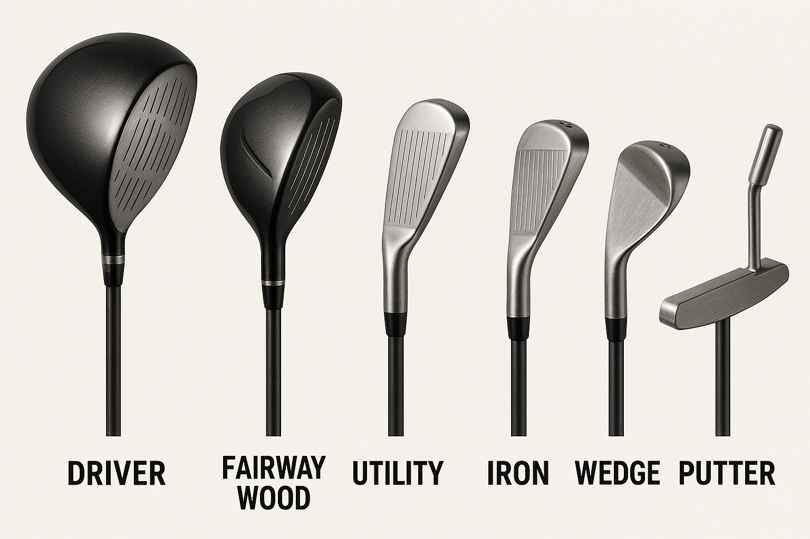

きっかけ
営業先のお客様にコンペへお誘いいただいたことが、ゴルフを始めるきっかけでした。
これまでゴルフの経験はなく、基本を知ろうと調べてみたのですが、初心者向けに分かりやすくまとめられたサイトは意外と少ないと感じた為、
「自分で整理してみよう」と思いこのサイトを作りました。 ゴルフのルールやクラブの特徴、よく使う用語をまとめることで、同じ状況の方や自分の学びの記録にもなればと考えています。
基本ルール【初心者向け】
プレイの順番
ホールでは、カップから遠い人が先に打ちます。ティーショットでは前のホールでスコアが良かった人から打ちます。
ボールを動かさない
基本的にボールは止まった場所から打ちます。拾い上げるときは必ずマークを置いて元の位置に戻しましょう。
OBとペナルティ
白杭の外はOB（アウト）。池や川はペナルティエリア。どちらも1打罰で救済処置をしてプレイを続けます。
バンカー・グリーンのマナー
バンカーでは打つ前に砂にクラブをつけない。グリーンではボールマークを直し、他の人のラインを踏まないようにします。
スポーツマンシップ
仲間のプレイ中は静かに。安全に気を配り、みんなが気持ちよくプレイできるようにしましょう。
プレーの順番（Ready Golf）
以前は「ホールから遠い人が先に打つ」のが基本でしたが、現在は 「安全を確認して準備ができた人から打ってOK」というルールが推奨されています。 初心者でもテンポよくプレーできるので安心です。
用語【初心者向け】
パー（Par）
そのホールの基準打数。例：パー4なら4打でカップイン。
ボギー（Bogey）
パーより1打多いスコア。パー4を5打で上がること。
バーディー（Birdie）
パーより1打少ないスコア。パー4を3打で上がること。
イーグル（Eagle）
パーより2打少ないスコア。パー5を3打で上がるなど。
フェアウェイ（Fairway）
ティーからグリーンまで芝が短く刈られた打ちやすい場所。
ラフ（Rough）
フェアウェイの外側にある芝の長いエリア。打ちづらい。
グリーン（Green）
ホール（カップ）がある芝の短いエリア。パターで打つ。
OB（Out of Bounds）
コース外に出た打球。1打罰で打ち直しになる。
バンカー（Bunker）
砂が入ったハザード。専用の打ち方が必要。
アプローチ（Approach）
グリーン近くから寄せるショット。距離と高さの調整が大切。
OB（アウトオブバウンズ）
コースの外にボールが出てしまうこと。1打罰を受けて打ち直します。
バーディ
基準打数（パー）より1打少なくカップインすること。
クラブの種類
ドライバー
ティーショットで使うクラブ。飛距離を出すために使用。方向性を安定させるのが課題。
フェアウェイウッド
フェアウェイやラフから長い距離を打つときに使用。ボールをきれいに上げられるよう練習中。
ユーティリティ
ウッドとアイアンの中間。距離と方向性のバランスが良い。
アイアン
番手ごとに飛距離を打ち分けられるクラブ。グリーンを狙うときに使用。
ウェッジ
アプローチやバンカーショットで使用。高さやスピンをコントロールする練習をしている。
パター
グリーン上でボールを転がすクラブ。力加減と方向性を意識して練習中。
クラブ別 平均飛距離（目安）
| クラブ | 男性平均 | 女性平均 |
|---|---|---|
| ドライバー | 200〜230y | 150〜180y |
| 3W / 5W（フェアウェイウッド） | 180〜210y | 130〜160y |
| ユーティリティ | 170〜200y | 120〜150y |
| 5番アイアン | 160〜180y | 110〜140y |
| 6番アイアン | 150〜170y | 100〜130y |
| 7番アイアン | 140〜160y | 90〜120y |
| 8番アイアン | 130〜150y | 80〜110y |
| 9番アイアン | 120〜140y | 70〜100y |
| PW（ピッチングウェッジ） | 100〜120y | 60〜90y |
| AW（アプローチウェッジ） | 80〜100y | 50〜70y |
| SW（サンドウェッジ） | 70〜90y | 40〜60y |
| パター | 距離を調整して使う（ヤード換算なし） | |